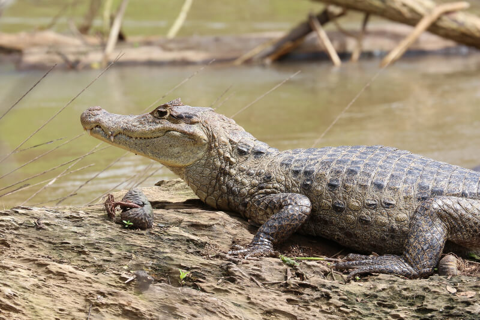
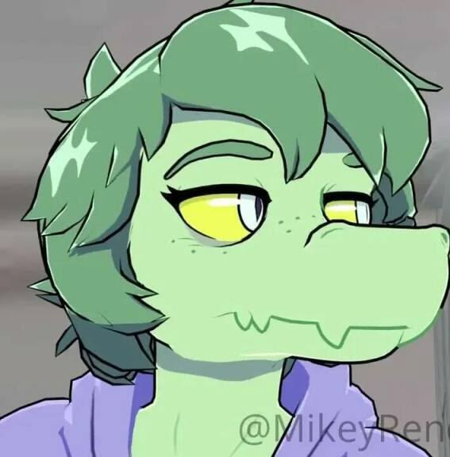
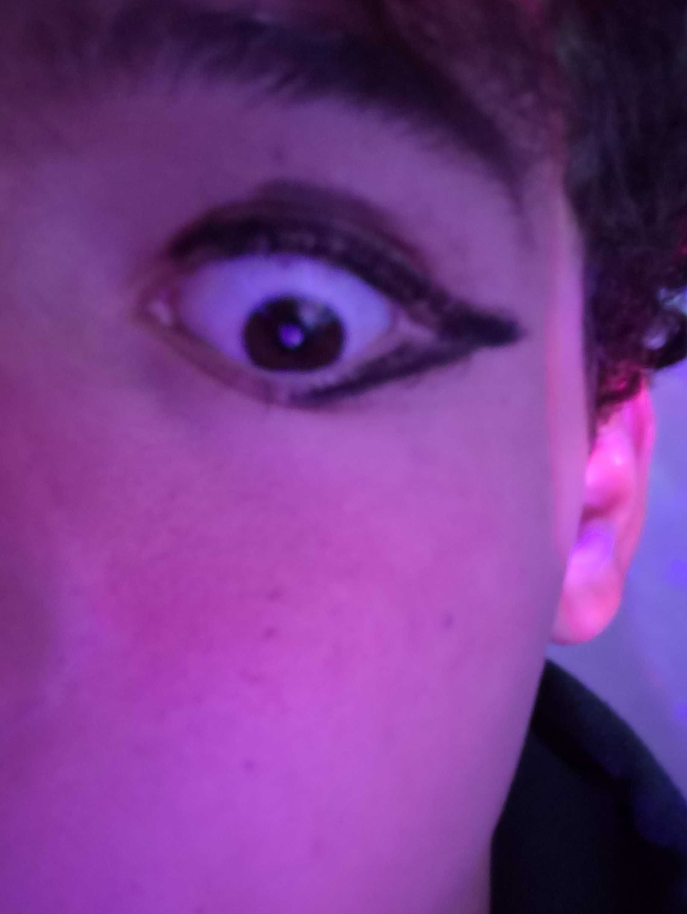
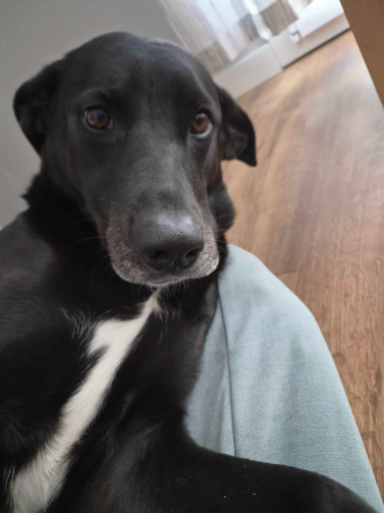
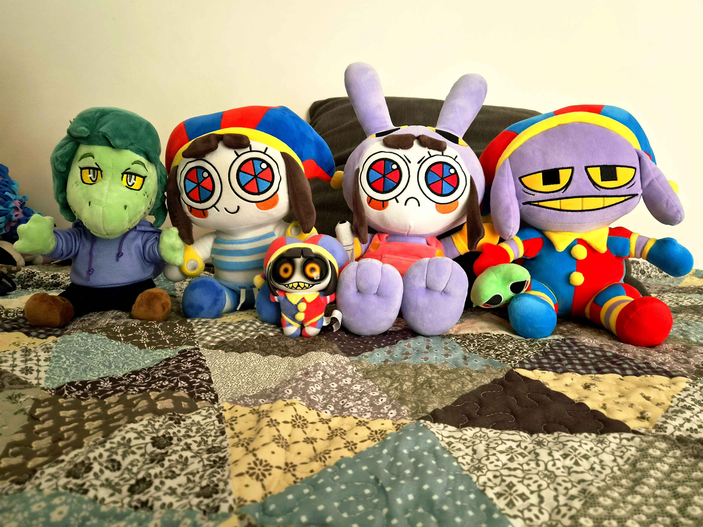

Who am I?
Name: RadioToxic57.
Age: 18.
Ocupation: Artist
Where do I live: Portugal.
Favourite Animals: Alligators, Cats, Foxes, Raccoons, Dogs.
Hobbies: Drawing, Cooking, Photography, Collecting Plushies, Sleeping, Programming small websites.
My best friend: Oscar!


A funny fact about alligators
A funny fact about alligators is that to save energy while resting in shallow water, they actually stand on their hind legs at the bottom, looking like they are tiptoeing or doing ballet!
When you see an alligator from above the water with only its eyes and snout poking out, you picture an intimidating, majestic predator floating gracefully. But underwater, the reality is completely hilarious:
In shallow areas, they don't bother floating or swimming—they simply rest their hind legs and tail on the ground and stand fully upright, almost as if they are patiently waiting in line at the grocery store.
Because their bodies are naturally buoyant, this posture makes them look like they are "wearing high heels" or dancing underwater.
If you were to suddenly drain the water around a resting alligator, the image of a terrifying apex predator would instantly turn into a goofy reptile just chilling on its tiptoes!

A little bit about myself
Hello Hello! My name is Toxic, I'm 18 years old, bisexual, femboy, and an artist! I like gaming, listening to music, drawing, plushies, cooking, eating candy, sleeping, and making videos!
As for the games I play: Fortnite, Subnautica, Minecraft, Silly Linguine Cat Simulator Deluxe Online, Pizza Tower, Pixel Gun 3D, Superhot, Paint The Town Red, Garry's Mod, L4D2, Cuphead, and some others I can't remember lol, oh and I've already 100% Lego Batman 2!
Now a little bit about me: I'm diagnosed with ADHD, Anxiety, and recently something else I don't really like sharing because I'm kind of embarrassed, but anyways... I'm super shy off-screen, introverted, and have an extreme difficulty making friends, especially in large and VERY active communities. I'm also a bit acid/aggressive when talking about certain topics, it's just my thing, so don't sweat it!

My doggy
This is my doggy, Nina. She's a mixed breed between Golden Retrivier and Labrador. Her parents are also Spanish, she came to Portugal really really young, a few days after getting birthed, and around this time was when we adopted her.
Nina is very hyperactive, but kinda shy at the same time.. she don't really like other dogs messing with her, she gets very angry cuz she want to be left alone, which is very funny, considering the owner is kinda like this teehee. She's also a bit lazy, grumpy, but she's still my little baby :)

My plushies
